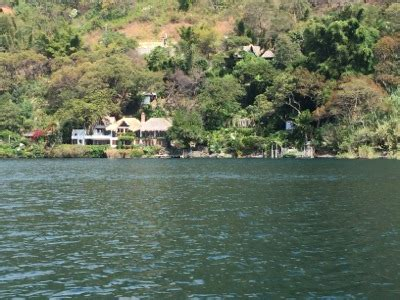
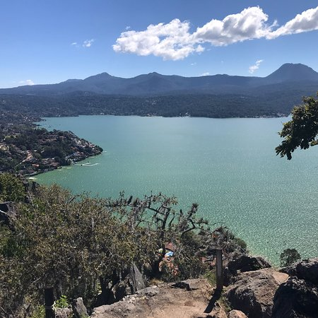
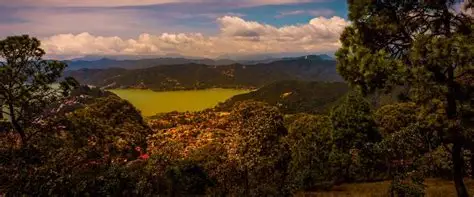

"Es el corazon del pueblo podemos verlo desde kayak y paseo en lancha y su ambiente relajado, ofrece una variedad de actividades es un lago artificial pero parece natural.
El Lago Avandaro (tambien conocido como PRESA MIGUEL ALEMAN)se encuentra en el Estado de México, específicamente en el municipio de Valle de Bravo,está ubicado a aproximadamente 5 kilómetros de la cabecera municipal de Valle de Bravo, rodeado de montañas y con acceso a un lago artificial este lago es conocido por su belleza natural y es un destino turístico popular, ideal para actividades al aire libre y relajación

" El más icónico es una piedra gigante a 2,600 msnm ves todo el lago, el pueblo y el bosque es de donde despegan los parapentes, así que siempre verás gente volandosubes caminando 15 min o en coche hasta arriba y el costo es grstis Mirador de Monte Alto reserva natural protegida.
Es el mirador más alto (2,400 m). Vista 360° del lago, el Nevado de Toluca y Valle ideal para picnic, bici de montaña y ver el atardecer mirador del Museo del Castillo está dentro del Hotel El Santuario es privado pero si consumes algo te dejan pasar es la mejor vista para el atardecer sobre el lago, nivel postal."

Reserva Monte Alto Puro pino, oyamel y encino gigante ,hay musgo en todos los troncos, orquídeas silvestres y hongos en temporada. Es hogar de venado cola blanca, zorra gris y 40 tipos de pájaros. Tiene 6 km de senderos para caminar y bici.
Es el pulmón grande de Valle ,bosque cerrado donde casi no entra el sol,ahí crecen los ocotes de 30 metros y el suelo siempre está alfombrado de agujas de pino en época de lluvias es muy recomendado ya que da unas vistas hermosas
